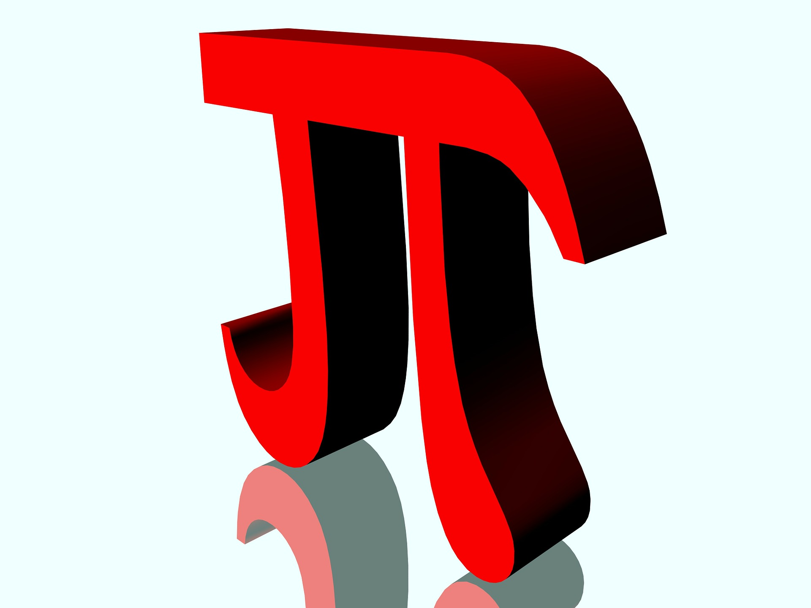

<mat-sidenav-container autosize class="container" fullscreen>
    <mat-sidenav  [mode]="sideNavMode" class="sidenav" #sidenav [opened]="sideNavOpened" style="overflow: hidden;">
        <mat-toolbar color="primary" class="mat-elevation-z4">
            
            <h1 class="logo">
                PIII.<span style="font-size: 12px;">com</span>
            </h1>
        </mat-toolbar>
        <lms-portal-mfe-right-menu></lms-portal-mfe-right-menu>
    </mat-sidenav>
    <mat-sidenav-content style="z-index: unset;overflow: hidden; ">
        <mat-drawer-container fullscreen>
            <mat-drawer mode="side" #drawer class="drawer" [opened]="matDrawerOpened" style="overflow: hidden;">
                <mat-toolbar color="primary" class="mat-elevation-z4">
                    
                </mat-toolbar>
                <lms-portal-mfe-right-menu [iconOnly]="true"></lms-portal-mfe-right-menu>
            </mat-drawer>
            <mat-drawer-content style="overflow: hidden;">
                <lms-portal-mfe-top-menu [rightMenu]="sidenav" [drawer]="drawer" [leftMenu]="sidenav2" [matDrawerShow]="matDrawerShow" style="z-index: 500"></lms-portal-mfe-top-menu>
                <ng-scrollbar style="height: calc(100% - 33px);">
                    <router-outlet style="padding: 25px;"></router-outlet>
                </ng-scrollbar>
            </mat-drawer-content>
        </mat-drawer-container>
    </mat-sidenav-content>

    <mat-sidenav #sidenav2 position="end" mode="over">
        <lms-portal-mfe-left-menu [leftMenu]="sidenav2"></lms-portal-mfe-left-menu>
    </mat-sidenav>

</mat-sidenav-container>
